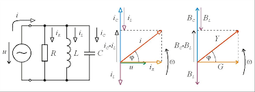

Villamosságtan I.
Tematika
- A tantárgy követelményrendszerének ismertetése. Mértékegységek. SI
mértékrendszer. Elektromos alapjelenségek. Elektromos töltés, erőhatás a
villamos térben. Coulomb-törvény. Villamos térerősség, a tér munkája,
feszültség, potenciál.
- Oktatási szünet
- Az elektromos kapacitás. Kondenzátorok soros, párhuzamos kapcsolása, eredő
kapacitás. A villamos tér energiája. Elektromos áram. Ellenállás. Vezetők és
szigetelők. Ohm és Joule törvény. Villamos hálózatok fogalma, részei és
elemei, aktív és passzív kétpólusokkal felépített hálózatok. Kétpólusok
alapösszefüggései. Vonatkozási irányok.
- Kirchhoff egyenletek és ezek alkalmazása. Soros, párhuzamos kapcsolások
eredője. Hálózatszámítás a Kirchhoff egyenletekkel. Ellenálláshű átalakítás.
Áram- és feszültségosztó összefüggések.
- 1. zárthelyi
- Egyenáramú munka és teljesítmény, teljesítményillesztés. Egyenáramú munka,
teljesítmény számítás. Hálózatszámítási tételek: szuperpozícó, reciprocitás,
Thevenin, Norton, Millman tétel, hurokáramok és csomóponti potenciálok
módszere.
- Oktatási szünet
- Mágneses tér: Mágneses indukció, fluxus, térerősség. A gerjesztési törvény.
Anyagok mágneses tulajdonságai. Erőhatások mágneses térben. Mágneses kör.
Mágneses Ohm-törvény.Változó mágneses tér. Mozgási és nyugalmi indukció.
Induktivitás. Ön- és kölcsönös indukciós tényező. Mágneses tér energiája.
- 2. zárthelyi
- Váltakozó áramú áramkörök. Szinuszos mennyiségek leírása, ábrázolása.
Szinuszos hálózatok komplex számítási módszere. Fazorábra.Áramköri elemek
viselkedése szinuszos feszültségre kapcsolva. Reaktanciák, impedancia,
admittancia.
- Váltakozó áramú teljesítmények: hatásos, meddő, látszólagos teljesítmény
fogalma, mértékegységek. Teljesítménytényező.
- Többfázisú rendszerek. Szimmetrikus háromfázisú hálózatok. Aszimmetrikus
háromfázisú rendszerek. Teljesítmény számítása háromfázisú rendszerekben.
- 3. zárthelyi
- Pótzárthelyi